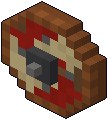

Scudo di legno
Uno scudo tondo alla maniera dei vichinghi: assi dipinte di rosso e di bianco, bordo di cuoio, umbone di ferro. Lo imbracci appena lo prendi: para 1 colpo intero, da qualunque parte arrivi, poi si spezza.
- Dove
- nei forzieri e nei vasi; passandoci sopra, al braccio

 .
. . Si beve anche quando sei illesa.
. Si beve anche quando sei illesa.